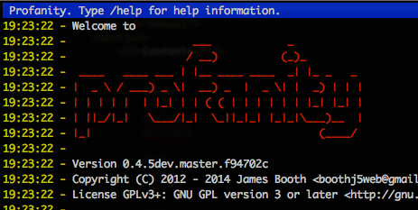
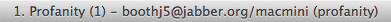
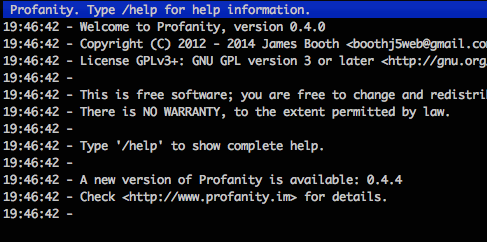
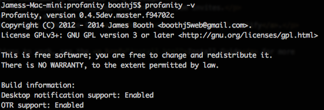
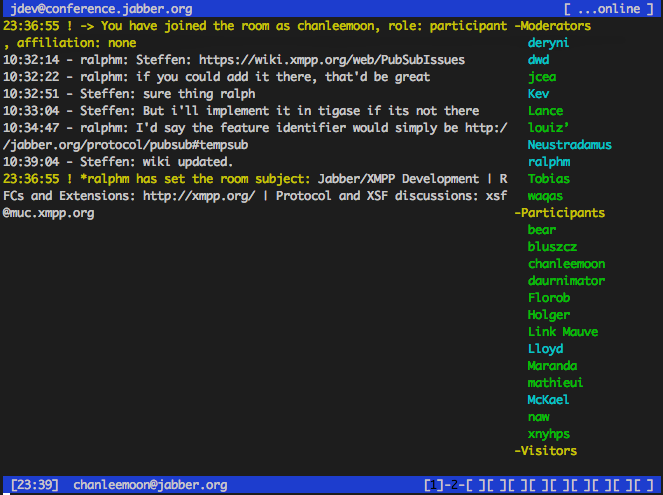

Contents
General UI settings
The colour scheme may be changed by setting the theme, see the /theme command. You may add your own themes to the themes directory.
By default the ASCII logo is not displayed, to enable it:
/splash on
To disable the logo:
/splash offBy default the terminal title bar will show information such as current logged in user, and number of unread messages.

To disable the title bar information:
/titlebar offTo perform a check for new versions on start up, and with the /about command, enable version checking:
/vercheck on
By default version checking is disabled.
All presence changes from your contacts are by default shown in the console window. This behaviour may be changed using the /statuses command:
/statuses console online
/statuses console none
/statuses console allWhere online will show only online/offline presence updates, none will disable all presence updates, and all will show all updates (the default).
back to top
Getting notified of new messages
The terminal can be made to beep and/or flash when new incoming messages are received, using the following commands:
/beep on/flash onBoth are disabled by default. Note that some terminals may beep instead of flash, or flash instead of beep.
The /notify command allows customisation of desktop notifications, including whether or not to show a desktop notification, whether to show a desktop notification for new messages in the current window, and whether to show the message text with the notification.
For chat rooms an additional option allows desktop notifications only when your nickname is mentioned in a message.
Desktop notifications can also be enabled for incoming subscription requests, when a contact is typing, and for chat room invites.
Periodic desktop notifications may also be enabled as a reminder that you have unread messages.
Details of the options, how to set them and some examples can be found in the command reference for /notify.
Without any configuration, desktop notifications are disabled by default.
Profanity must be compiled with notification support for the notifications to work, see the Install Guide for more information.
On Windows (Cygwin), notifications are enabled by default.
On Linux, libnotify is required as a dependency.
On OSX, terminal-notifier is required as a dependency
To find out if notification support was included, run profanity -v:

back to top
Customising regular chat
To show the history of messages up to a day old, when starting a new chat window with a contact, use the /history command:
/history onBy default this setting is disabled.
Typing notifications are displayed in the console, or in the chat window. To disable these messages:
/intype offIf OTR support is enabled, chat windows will show a warning when you are sending unencrypted messages:

This warning may be disabled with the following command:
/otr warn offAll presence changes from chat recipients are by default shown in the chat window. This behaviour may be changed using the /statuses command:
/statuses chat online
/statuses chat none
/statuses chat allWhere online will show only online/offline presence updates, none will disable all presence updates, and all will show all updates (the default).
back to top
Customising chat rooms
When in a chat room, the list of occupants is displayed in a panel to the right of the main window.

This panel may be hidden at any time using the /occupants command:
/occupants hideTo show the occupants panel again:
/occupants showThe default behaviour when entering chat rooms is to show the occupants panel, this may also be configured using:
/occupants default hide
/occupants default showWhen joining a chat room, your role an affiliation are displayed, any updates to room occupants role and/or affiliation will also be displayed, and the occupants panel will be broken down by role. If you wish disable showing this information:
/privileges offTo enable the extra information again:
/privileges onAll presence changes from chat room occupants are by default shown in the room. This behaviour may be changed using the /statuses command:
/statuses muc online
/statuses muc none
/statuses muc allWhere online will show only online/offline presence updates, none will disable all presence updates, and all will show all updates (the default).
back to top
Adding your own command aliases
You can add aliases for commands that you use frequently using the /alias command.
For example, to add an alias for the command:
/who online friendsUse the alias command:
/alias add wof /who online friendsFrom this point on you may use the command:
/wofWhich will have the same affect as the full command.